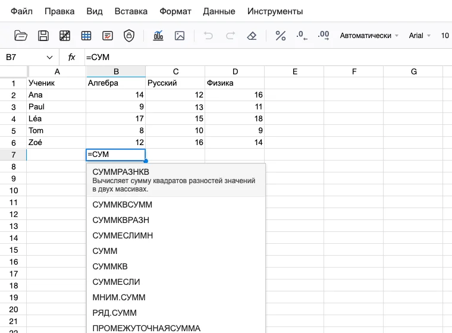
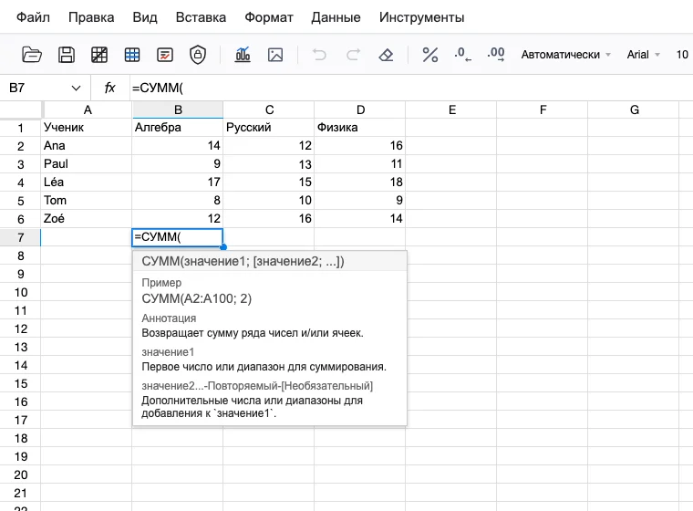
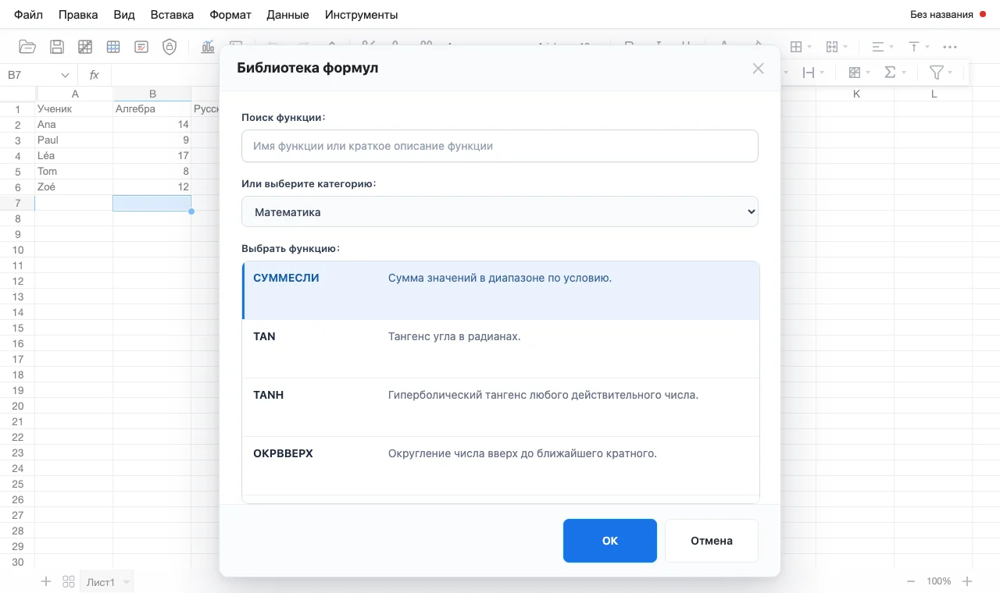

Формулы
Запись формулы
Формула начинается с =. В ней числа, тексты в кавычках, ссылки на ячейки, операторы и функции.
=B2*2
=(B2+C2+D2)/3
=СРЗНАЧ(B2:B6)
="Итого: "&СУММ(B2:B6)Ячейка показывает результат, строка формул — формулу. Ячейки, зависящие от изменённой, пересчитываются сразу.
По-русски запятая десятичная, а аргументы разделяет точка с запятой: =ОКРУГЛ(3,14159; 2). Имена функций набирают строчными или прописными, по-русски или по-английски: =сумм(B2:B6) и =SUM(B2:B6) принимаются.
Указание ячеек мышью
При наборе формулы щелчок по ячейке листа вставляет её адрес, протягивание — диапазон. У каждой ссылки свой цвет, в формуле и на листе.
Подсказка имён
С первых букв имени DocCells предлагает функции, которые их содержат: ↑ ↓ для просмотра, Enter, Tab или щелчок для выбора. После открывающей скобки справка напоминает аргументы.


Автосумма
записывает сумму. Стрелка предлагает Сумма, Среднее, Количество, Максимум, Минимум и Все формулы: библиотеку, где функцию ищут по имени, описанию или категории.

Операторы
| Оператор | Назначение |
|---|---|
+ - * / | четыре действия |
^ | степень: =2^10 |
% | процент: =20%*B2 |
& | соединяет тексты: =A2&" "&B2 |
= <> | равно, не равно |
< > <= >= | сравнения |
( ) | порядок действий |
Степени идут раньше произведений и частных, затем суммы, затем сравнения. =-2^2 даёт −4 (в Excel 4).
Ссылки
| Запись | Значение |
|---|---|
B2 | ячейка; следует заполнению |
$B$2 | та же ячейка и при заполнении |
B$2, $B2 | закреплённая строка, закреплённый столбец |
B2:D6 | диапазон |
B:B, 2:2 | весь столбец, вся строка |
Лист2!B2, 'Оценки 2'!B2 | ячейка другого листа |
оценки | именованный диапазон |
При заполнении вниз =B2*$B$1 становится =B3*$B$1, =B4*$B$1…
Условия
=ЕСЛИ(B2>=10; "сдал"; "не сдал")
=ЕСЛИ(И(B2>=10; C2>=10); "да"; "нет")
=ПЕРЕКЛЮЧ(A2; "a"; 1; "b"; 2; 0)
=СЧЁТЕСЛИ(B2:B6; ">10")
=СУММЕСЛИ(A2:A6; "Ana"; B2:B6)
=СРЗНАЧЕСЛИ(B2:B6; "<10")- Логические значения пишутся
ИСТИНА()иЛОЖЬ(), со скобками. Показываются как TRUE и FALSE. - Условие — это текст:
">10","<>0","Ana". Подстановочные знаки*и?не распознаются. - Пустая ячейка определяется так:
=B2=""; она не равна 0.
Поиск в таблице
=ВПР("Léa"; A2:D6; 3; 0)
=ИНДЕКС(A2:A6; ПОИСКПОЗ(МАКС(B2:B6); B2:B6; 0))Первая ищет Léa в первом столбце таблицы и возвращает третий; последний аргумент 0 требует точного значения. Вторая даёт имя того, у кого лучшая оценка.
Даты и время
Дата — это число дней, время — доля дня: в ячейках их можно складывать и вычитать.
=A2+7
=A3-A2
=ДНИ(A3; A2)
=ДЕНЬНЕД(A2; 2)Дата, которую дают ДАТА или СЕГОДНЯ, для сложения должна пройти через ячейку: =СЕГОДНЯ()+1 даёт #VALUE!, но если в A1 стоит =СЕГОДНЯ(), то =A1+1 даёт завтрашний день. Результат — число: задайте ему формат Дата.
Ошибки
| Показано | Причина |
|---|---|
#NAME? | неизвестное имя: опечатка, невычисляемая функция, ИСТИНА без скобок, текст без кавычек |
#VALUE! | неожиданный тип: текст там, где нужно число |
DIV/0 | деление на ноль или на пустую ячейку |
#N/A | значение не найдено (ПОИСКПОЗ, ВПР) или GEO вне DocGeo |
#REF! | ячейки или листа не существует |
#NUM! | число вне области определения: =КОРЕНЬ(-1) |
#ERROR! | неверно записанная формула или невычисляемая функция |
ЕСЛИОШИБКА заменяет ошибку функции (#N/A, #NUM!): =ЕСЛИОШИБКА(ВПР(E1; A2:D6; 2; 0); "нет"). Ошибку вычисления (DIV/0, #VALUE!) она не заменяет: от деления на ноль защищает проверка делителя, =ЕСЛИ(B2; B3/B2; ""), годная и для нуля, и для пустой ячейки.